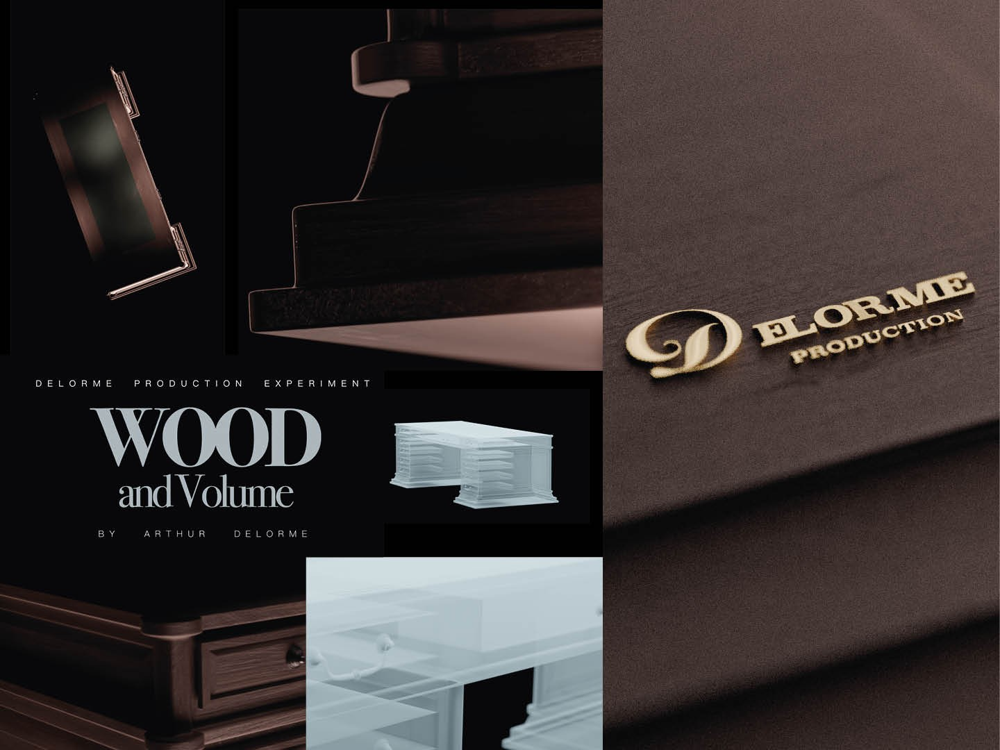

PROJET 01 / 07
Wood and Volume
Wood and Volume est un projet personnel explorant le travail de la matière.
De la modélisation à la réalisation du packshot, jusqu’au montage vidéo, ce projet met en scène le dialogue entre le naturel et l’industriel.
Le bois brut représente le savoir-faire artisanal et la beauté du travail manuel, tandis que le volume transparent introduit une dimension plus industrielle et contemporaine. Cette opposition visuelle souligne la tension entre matière organique et forme construite.
Découvrir les autres projets →